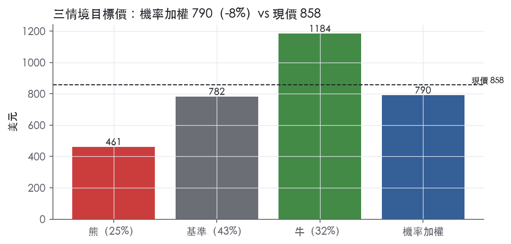
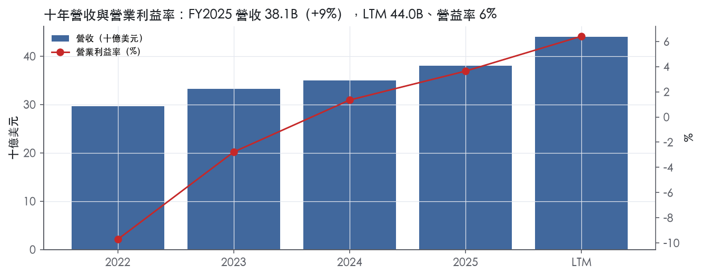
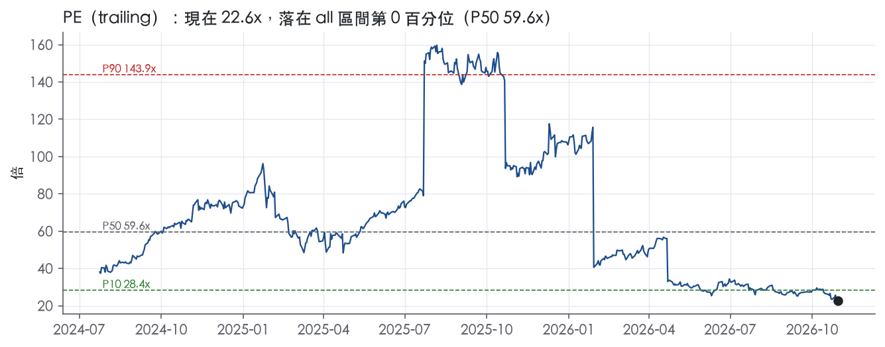
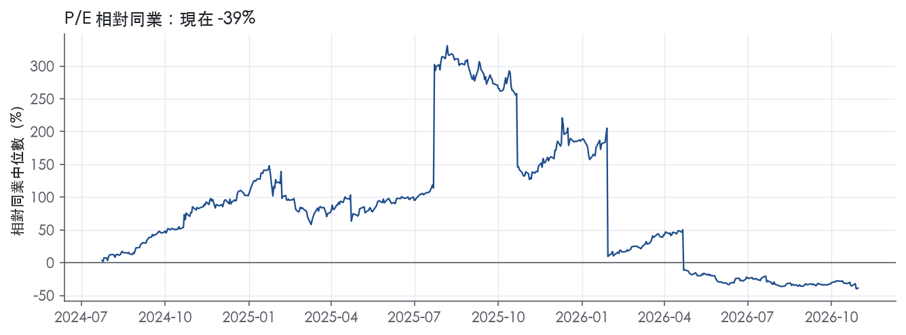
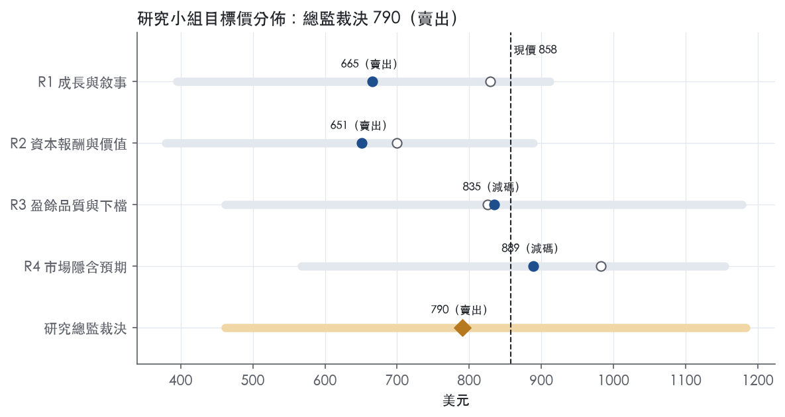
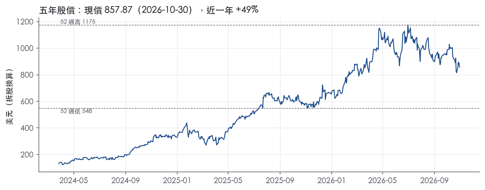

評等總表 › 工業 › GEV
成長屬實但倍數將收斂，相對同業減碼｜評等 賣出｜目標價 790
| 報告日 | 評等 | 目標價 | 當時股價 | 超額報酬 |
|---|---|---|---|---|
| 2026-10-30 | 賣出 | 790 | 858 | -17.6% |
| 評等 | 賣出（邊界，鄰近減碼） |
| 12 個月目標價 | 790 美元 |
| 現價 | 857.87 美元（2026-10-30） |
| 預期報酬 | 股價 -7.9%＋股息 0.2%＝總報酬 -7.7%；同業籃門檻 10.0%，超額 -17.6% |
| 估值方法 | P/E 45.0x，套在未來四季的EPS |
| 三情境 | 熊 461／基準 782／牛 1184 |
| 研究流程 | 四位研究員兩輪辯論＋研究總監裁決 |
| 資料來源 | SEC EDGAR XBRL、Tiingo、FRED（全免費） |
成長屬實但倍數將收斂，相對同業減碼（研究總監裁決，四位研究員兩輪辯論後）
評等 賣出（邊界，鄰近減碼）｜12 個月目標價 790 美元（總監三情境機率加權 830 與研究員中位數 750 各半）｜現價 857.87（2026-10-30）
預期報酬：股價 -7.9%＋股息 0.2%＝總報酬 -7.7%。同業籃門檻 10.0%，超額 -17.6%，離減碼的分界不到三個百分點，屬邊界評等（落在其他級距的機率約三成）。
估值方法：P/E 45.0x，套在未來四季的EPS。三情境：熊 461（25%）／基準 782（43%）／牛 1184（32%）。
評等說明：研究總監自己的機率加權目標價 830 美元對應「減碼」；與研究員第二輪中位數 750 美元各半後為 790 美元，落入「賣出」。兩者只差一級，請把這檔讀成「減碼～賣出」，正文裡總監的立場文字以「減碼」寫成。
什麼會讓研究總監改變看法：FY2027 FCF 指引高於 17B 且 Q4 新簽 SRA 回到 18 GW 水準，代表預收款與訂單動能未減速，倍數上修至 R4 的 52x 並轉中性；Q4 新簽 SRA 續低於 8 GW 且年底未達 130 GW，或 Wind 全年虧損超過 500M，熊機率上調。
| 過去四季（實際，FY2026Q3） | 未來四季 | 第 5–8 季 | 第 9–12 季 | |
|---|---|---|---|---|
| 營收（B） | 44.0B | 52.0B | 58.7B | 64.6B |
| 營收成長 | 16.9% | 18.0% | 13.0% | 10.0% |
| 營業利益率 | 6.4% | 11.0% | 13.0% | 14.5% |
| EPS（美元） | 38.00 | 17.37 | 24.04 | 30.56 |
| EPS 成長 | 517.7% | -54.3% | 38.4% | 27.1% |
| 每股股息（美元） | 2.00 | 2.00 | 2.00 | 2.00 |
| P/E（現價） | 22.6x | 49.4x | 35.7x | 28.1x |
| 股息殖利率（現價） | 0.2% | 0.2% | 0.2% | 0.2% |
過去四季為申報數字；預測為研究總監的假設、程式計算。倍數與殖利率都用現價計算，用來看現價對應各期獲利的高低。
| 情境 | 機率 | 故事 | 未來四季營收成長 | 第 5–8 季營益率 | 倍數 | 目標價 | 股價漲跌 |
|---|---|---|---|---|---|---|---|
| 熊 | 25% | 對應風險表第 1 條（倍數壓縮）、第 2 條（固定價合約超支）、第 3 條（Wind 虧損擴大至 400–500M）：新簽 SRA 由 18 GW 降至 8 GW 的趨勢延續、年底未達 130 GW，溢價歸零至同業 5 年中位 32.9x 以下，預付款回沖使回購減速；總經取本行下行路徑（GDP 0.3、Baa 利差 2.30、美元 124.0） | 14.0% | 10.0% | 32.0x | 461 | -46.2% |
| 基準 | 43% | backlog 以 improved margins 逐季認列、GAAP 營益率含 Q1 季節低點後 NTM 11%，前瞻成長由 18% 降至 13%、預收款 FCF 回落，一年後 trailing 倍數收斂至同業中位數加有限溢價 | 18.0% | 13.0% | 45.0x | 782 | -8.9% |
| 牛 | 32% | 年底燃氣合約超過 130 GW、2027 指引利潤率再上修、回購授權 20B 加速執行，倍數停在同業籃頂 PWR 56.2x 附近；總經取本行上行路徑（10 年債 4.60） | 22.0% | 15.0% | 58.0x | 1184 | 38.0% |
目標價由程式依研究總監的驅動與倍數計算；機率由研究總監給定。

四位研究員用不同方法各自估值，回應研究總監的質疑後交出第二輪，最後由總監逐點裁決。各研究員的主張見第七章，裁決理由見第八章，完整論證見《研究底稿》。
| 立場（一輪→二輪） | 加權目標價（一輪→二輪） | 評等（一輪→二輪） | 第二輪倍數 | 熊～牛目標價 | |
|---|---|---|---|---|---|
| R1 成長與敘事 | 中性→看空 | 829→665 | 減碼→賣出 | 38.0x | 394～912 |
| R2 資本報酬與價值 | 看空→看空 | 700→651 | 賣出→賣出 | 37.0x | 379～889 |
| R3 盈餘品質與下檔 | 中性→看空 | 825→835 | 減碼→減碼 | 45.0x | 462～1178 |
| R4 市場隱含預期 | 看多→中性 | 983→889 | 中立→減碼 | 52.0x | 567～1154 |
| 研究總監裁決 | 看空 | 790 | 賣出 | 45.0x | 461～1184 |
目標價由程式依各自的驅動與倍數計算；評等＝機率加權總報酬 − 同業籃門檻。
GE Vernova 是從 GE 分拆出來的全球電力產業領導者，產品與服務涵蓋發電、輸電、轉換與儲電¹。公司設計、製造、交付並維護相關技術，目標是打造更可靠、安全且永續的電力系統，支持電氣化與去碳化¹。公司自稱其裝機基礎貢獻全球約 25% 的電力¹。客戶涵蓋電力生產商、工業客戶、政府及其他終端用戶，散布全球逾 100 個國家。2024 年 4 月 2 日 GE 完成分拆，GE Vernova 成為獨立上市公司¹。本質上這是一家靠天然氣渦輪機、電網設備與風電三條腿站立的能源基建公司，核心動能來自 AI 數據中心與電氣化帶動的全球用電需求結構性成長。
公司依產品性質劃分三個報導分部：Power、Wind、Electrification¹。Power 分部涵蓋 Gas Power、Nuclear Power、Hydro Power、Steam Power，核心產品是重型與航改型燃氣渦輪機及全廠服務解決方案¹。截至 2025 年底，Power 的 RPO（未完成履約義務）約 944 億美元，燃氣渦輪機裝機基礎約 7,000 台，其中約 1,800 台有長期服務合約，平均剩餘合約年限約 10 年¹；HA 機型在 RPO 中有 51 台，43 台在安裝調試中，已裝機 126 台¹。FY2026Q3 Power 營收 6,067M 美元、年增 25%，訂單 21,780M 美元、年增 178%，分部 EBITDA margin 21.4%²。
Wind 分部包含陸上與海上風機、葉片（LM Wind Power），聚焦精簡後的「主力機型」（workhorse products），這些機型占 2025 年底設備 RPO 約 75%¹。陸上風機服務相關 RPO 涵蓋約 24,000 台風機，裝機基礎約 59,000 台，美國市場佔陸上風機設備 RPO 約 60%¹。海上風機面臨專案成本與執行時程壓力，2025 年 12 月美國內政部暫停所有在建大型海上風電租約，直接影響 Vineyard Wind 專案時程¹；但 FY2026Q3 新聞稿顯示該訴訟已全部解決²。Wind 是三個分部中唯一持續虧損的一塊，FY2026Q2 分部 EBITDA 虧損 275M 美元，FY2026 上半年虧損 657M 美元³；FY2026 全年指引為 EBITDA 虧損 400–500M 美元²。
Electrification 分部整合電網方案（Grid Solutions）與電力轉換儲能（Power Conversion & Storage），合稱 Electrification Systems，加上 Electrification Software，提供輸電、配電、轉換、儲電與調度相關產品與服務，包括 HVDC、交流變電站方案、電力變壓器、開關設備、同步調相機及電網自動化產品¹。FY2026Q3 該分部營收 3,862M 美元、年增 51%（含 Prolec GE 併入），分部 EBITDA margin 19.1%，設備 backlog 增至 42.2B 美元、年增 60%（其中 50 億來自 Prolec GE）²。三分部比重上，Power 與 Electrification 是近期成長引擎，Wind 是拖油瓶但虧損正在收窄。
公司客戶以電力生產商、工業用戶、政府與公用事業為主，許多銷售對象是美國或外國政府、受管制實體（如公用事業、國營企業）¹。地理布局上，員工約 24,000 人在歐洲、21,000 人在美國、19,000 人在亞洲、6,000 人在拉丁美洲，總員工數約 75,000 人¹。供應鏈方面，公司每年採購約 200 億美元的材料與零組件，來源涵蓋逾 100 個國家¹。10 月宣布收購 Trench Group（高壓電網設備全球領導者），交易金額約 90 億美元等值，預計 2027 年底完成交割，將擴大 Electrification 產品線版圖²；另 Electrification 的 Prolec GE 併購案也持續貢獻營收與 backlog（約 50 億美元）²。整體看，公司通路以直銷大型電力客戶與政府標案為主，地區分散度高但美國與歐洲仍是權重最大的兩個市場。
FY2025Q4 營收 10.96B 美元、年增 3.8%，淨利大增至 3.66B 美元、EPS 13.28（is/dv 對應 FY2025Q4 欄位），當季毛利率 21.2%、營益率 5.5%（來自資料包年增及財務欄位）。FY2026Q1 營收 9.34B 美元、年增 16.3%，淨利攀升至 4.75B 美元、EPS 17.44，CFO 5.19B 美元、FCF 4.79B 美元，現金餘額升至 10.17B 美元（資料包 FY2026Q1 欄位）。
FY2026Q2 總營收 11,104M 美元，年增 22%，有機成長 12%³；淨利 649M 美元，淨利率 5.8%；調整後 EBITDA margin 11.3%，有機提升 340 個基點³；營運現金流 5,492M 美元、FCF 5,107M 美元，較去年同期大增 4,913M 美元³；季末現金餘額 13.1B 美元³。公司當時將 2026 全年營收指引上調至 45.5–46.5B 美元，FCF 指引上調至 11.5–12.5B 美元，調整後 EBITDA margin 維持 12%–14%³。
FY2026Q3 總營收 12,642M 美元，年增 27%，有機成長 18%²；淨利 1,289M 美元，淨利率 10.2%；調整後 EBITDA 1,943M 美元、margin 15.4%，有機提升 690 個基點²；訂單達 29.3B 美元、有機年增 96%，backlog 季增 20B 美元至 197B 美元²；營運現金流 6,057M 美元、FCF 5,409M 美元；季末現金餘額 16.8B 美元²。公司再度上調 2026 全年指引：營收 46.5–47.5B 美元（原 45.5–46.5B）、調整後 EBITDA margin 13.5%–14.5%（原 12%–14%）、FCF 16–17B 美元（原 11.5–12.5B）²。董事會同時將股票回購授權上調至 20B 美元（原 10B）²。整體趨勢是訂單、營收、利潤率、現金流四線齊揚，且公司連續兩季上修全年指引，顯示基本面動能持續加速。
公司將策略聚焦於：以技術服務電氣化與去碳化的全球永續目標；維繫與大型電力公用事業、開發商、政府及用電大戶的關係；服務既有裝機基礎並以新技術提升客戶成效與自身利潤現金流；透過更嚴謹的承保紀律改善利潤率並降低風險；精簡產品組合聚焦核心主力機型以改善成本與品質；用 lean（精實）方法提升成本結構與生產力；與第三方共同創新投資新技術；並承諾將至少三分之一的現金生成回饋股東¹。公司認為天然氣電力在能源轉型中扮演關鍵角色，是支撐工業化、電網穩定與超大規模雲端業者（hyperscalers）及數據中心用電需求成長的可靠且可調度電力來源¹。CEO Scott Strazik 表示公司預期第四季 backlog 將突破 2,000 億美元，年底前燃氣設備合約量至少達到 130 GW，並持續開發支援電網整合與韌性的電氣化技術以滿足公用事業與數據中心客戶需求²；CFO Ken Parks 則強調強勁現金餘額提升了高成長、增值型投資及股東回饋的信心²。
公司成長引擎的核心是 AI/數據中心驅動的用電需求爆發，直接反映在 Gas Power 訂單與 slot reservation agreements 的連續跳升，以及 Electrification 數據中心相關訂單的倍數成長上。Wind 分部短期內仍是現金流拖累，但隨 Vineyard Wind 訴訟解決與海外陸上風機需求回溫，虧損收斂速度值得觀察。整體而言，Trench Group 併購案進一步強化 Electrification 的規模與議價力，是驗證「用併購擴大核心業務」策略是否持續奏效的下一個觀察點。

GE Vernova 給窄護城河。燃氣渦輪機裝機基礎與長期服務合約構成實質轉換成本，但合併層級的超額報酬目前在數字上還看不到，因此不給寬。趨勢判為變寬：最近幾季利潤率連續上台階，Wind 以外的業務正在把需求紅利轉成更高的報酬。
護城河集中在 Power 分部的服務業務，Wind 沒有護城河，Electrification 只有部分優勢。
轉換成本（主要來源）
效率規模
無形資產
Wind 與 Electrification 不列入：Wind 競爭者包括 Vestas、Nordex、Envision、Goldwind 等多家¹，且長期虧損，看不到定價權。Electrification 面對 Hitachi Energy、Siemens、Schneider Electric、ABB 等強敵¹。
看不到，數字目前與「有護城河」的主張衝突，這是評級停在窄而非寬的主因。
我仍維持窄而不下修為無，理由有兩點：
最大的侵蝕來源是需求循環反轉，因為現在的利潤率改善有相當部分來自供不應求下的定價，不全是結構優勢。
目標倍數相對同業應持平，不給長期溢價。理由是護城河只集中在 Power 服務，合併層級的超額報酬尚未在 ROIC 或營益率上被證實，不能用長期間的超額報酬假設撐高終值。若後續幾季營益率維持在 FY2026Q3 的 11.0%以上，且 Wind 虧損收斂，可重新評估是否升為寬並給予溢價。
| 指標 | 最新 | 十年平均 | 標準差 | 最低 | 最高 |
|---|---|---|---|---|---|
| 毛利率 | 19.8% | 15.8% | 3.1% | 11.7% | 19.8% |
| 營業利益率 | 3.6% | -1.9% | 5.1% | -9.7% | 3.6% |
| FCF 利潤率 | 9.7% | 3.5% | 4.4% | -2.1% | 9.7% |
| ROE | 47.1% | 20.3% | 21.2% | -4.6% | 47.1% |
程式計算。資本成本代理值（10 年債＋5%）：10.0%；ROIC 平均減資本成本：—；ROIC 有資料的 0 年中，高於資本成本 0 年。
LTM營業現金流／淨利 1.85x、自由現金流／淨利 1.65x，皆為綠燈，現金遠遠跑在盈餘前面。應計比率 LTM -10.6%（近三年平均 -1.1%、十年平均 -1.1%）同樣是綠燈，負值代表盈餘的現金含量高於會計含量，不是靠應計堆出來的獲利。但要注意「近三年平均」的營業現金流／淨利只有-0.01x，與LTM的1.85x落差極大，這不是現金品質變差，而是FY2023-2024淨利基數接近零（FY2023淨利-0.44B、FY2024淨利1.55B）造成比率分母失真，屬於統計口徑的假訊號而非真實惡化。LTM層級看，營收44.04B、EBITDA 4.26B、FCF 17.11B，FCF遠高於EBITDA，主因是營運資金（訂單預收款）隨訂單暴增而大幅釋放現金，這點在8-K也有對應說明：「Free cash flow of $5.4 billion increased $4.7 billion, primarily due to higher positive benefits from working capital and stronger adjusted EBITDA」²。整體而言，現金轉換是本案最強的一項指標，可信度高。
公司非GAAP口徑的核心調整是把「Adjusted EBITDA」與GAAP淨利分開報告：第三季Adjusted EBITDA為1,943M，GAAP淨利為1,289M（三個月）²；九個月口徑更誇張，GAAP淨利為6,687M，但Adjusted EBITDA僅4,089M（九個月）²——GAAP淨利居然高於Adjusted EBITDA，代表EBITDA以下有大額非營業利得把帳面淨利墊高，而press release並未在本摘錄中拆解該利得的具體性質（稅項或其他）。對照最近8季表，FY2025Q4淨利3.66B、EPS 13.28，但當季EBITDA只有0.83B；FY2026Q1淨利4.75B、EPS 17.44，當季EBITDA只有0.52B——連續兩個季度淨利數倍於EBITDA，這在工業股極不常見，大概率是遞延所得稅資產評價備抵回沖或一次性業外利得，屬於非現金、不可持續的科目。真正代表核心業務成本的調整項目包括：SBC／營收僅0.6%（近三年與十年平均同為0.6%，綠燈），佔比很小，不構成盈餘灌水疑慮。另外本季公司把部分退休福利義務轉移給保險公司，支付約350M現金（"approximately $350 million paid in the quarter"）²，這是真實現金流出但屬於一次性資產負債表重整，不計入營運盈餘可以接受。
槓桿方面淨負債／EBITDA為-3.27x（LTM）、-3.79x（近三年與十年平均），公司是淨現金狀態，槓桿完全不是估值限制；季末現金餘額來到16.76B，公司自己也說「cash balance of approximately $17 billion, up $4 billion sequentially」²。利息保障倍數欄位沒有數字（—），但在淨現金的資本結構下，利息保障倍數本身已不是關鍵風險指標，缺值不構成紅旗。股東回饋方面，（股利＋回購）／淨利 LTM為66.0%（近三年與十年平均38.1%），綠燈，顯示公司把多數現金回饋股東而非舉債買回：本季回購1.7百萬股、花1.6B²，董事會並將回購額度從10B提高到20B²。稀釋股數年變動為-0.7%（近三年、十年平均+0.2%），顯示淨回購已開始壓低股數，對EPS有正向效果但幅度不大。公司並在10月宣布以9.0B美元收購Trench Group，這筆併購會增加商譽與未來攤銷，但不在本期財報數字內，暫不影響現有盈餘品質評估²。
LTM GAAP P/E 22.6x是建立在EPS 38.00之上，而EPS中含有至少兩季異常高的非營業利得（FY2025Q4、FY2026Q1淨利遠超當季EBITDA），這部分不會重複出現，估值師應以EV/EBITDA（現為50.1x）或EV/EBITA（60.2x）作為主要定錨，不要直接沿用trailing GAAP P/E。現金轉換與應計比率都支持盈餘的「營運現金」部分是真實、高品質的，FCF殖利率7.5%可以全額採信，不需要為現金流打折。槓桿端是淨現金，不構成任何倍數上限的限制，但考量GAAP淨利的業外雜訊與Trench Group併購後商譽攤銷即將上升，建議對未來GAAP EPS成長率做溫和下修，而非對目前的EBITDA/FCF品質打折。
| 項目 | LTM | 近三年 | 十年 | 燈號 | 規則 |
|---|---|---|---|---|---|
| 營業現金流／淨利 | 1.85x | -0.01x | 0.00x | 綠 | ≥1.00x 綠、<0.80x 紅 |
| 自由現金流／淨利 | 1.65x | 0.28x | 0.27x | 綠 | ≥0.90x 綠、<0.60x 紅 |
| 應計比率（(淨利−CFO)／平均總資產） | -10.6% | -1.1% | -1.1% | 綠 | ≤0.0% 綠、>5.0% 紅 |
| SBC／營收 | — | 0.6% | 0.6% | 綠 | ≤3.0% 綠、>8.0% 紅 |
| 淨負債／EBITDA | -3.27x | -3.79x | -3.79x | 綠 | ≤1.50x 綠、>3.00x 紅 |
| 利息保障倍數（營業利益／利息） | — | — | — | — | ≥8.00x 綠、<3.00x 紅 |
| 稀釋股數年變動 | -0.7% | 0.2% | 0.2% | 綠 | ≤0.0% 綠、>3.0% 紅 |
| （股利＋回購）／淨利 | 66.0% | 38.1% | 38.1% | 綠 | ≥50.0% 綠、<0.0% 紅 |
| 存貨成長 − 營收成長（FY2025） | +12.5pp | — | — | 黃 | ≤5pp 綠、>15pp 紅 |
程式計算；燈號以 LTM（無則近三年平均）判定。
| 風險 | 觸發指標（看什麼數字、在哪裡看） | 對 EPS 的影響方向與粗略幅度 | 未來 12 個月發生機率（高／中／低） | 出處 |
|---|---|---|---|---|
| 估值與倍數帶脫鉤：現價隱含永續高成長，一旦訂單或利潤率成長放緩，倍數壓縮幅度可能遠大於基本面惡化本身 | 季度 Adjusted EBITDA margin（8-K）、Orders 年增率（8-K）、trailing P/E 與 EV/EBITDA 相對歷史分位 | 方向：負；幅度：大（EV/EBITDA 現為 50.1x，P/E 22.6x，兩者皆遠低於 2026-01-29 的全期高點 98.1x／59.6x，顯示倍數本身波動劇烈）（band） | 中 | 研究判斷 |
| 固定價長週期合約成本超支／估算錯誤，侵蝕利潤率 | 分部 EBITDA margin 季度變化（8-K）、warranty／cost overrun 相關揭露（10-K） | 方向：負；幅度：中——公司自述「warranty and quality-related costs have represented, and may in the future represent, a meaningful portion of our expenses」「Cost overruns and related penalties have represented...a meaningful portion of our expenses」⁴ | 中 | 10-K 年報 FY2025 Item 1A（風險因素） |
| Wind 分部持續虧損且執行風險未完全解除 | Wind 分部 EBITDA 虧損金額（8-K 逐季）、海上風電監管動態 | 方向：負；幅度：中——FY2026 全年 Wind 分部 EBITDA 虧損指引 400–500M 美元（原約 400M 美元）²；FY2026Q2 單季虧損 275M 美元³ | 中 | 8-K 財報新聞稿（2026-10-28） |
| 投資級信評維持能力與資金取得成本 | 信評機構評等公告、公司債利差（ig_oas） | 方向：負；幅度：中——公司自述信評下調會提高融資成本、限制新合約取得能力⁴；目前趨勢正向，Fitch 於 2026 年 8 月已升評至 A-² | 低 | ²／⁴ |
| 供應鏈與關鍵材料集中（半導體晶片、稀土等）斷鏈 | 公司採購金額年度揭露（10-K）、分部毛利率季度變化 | 方向：負；幅度：小至中——公司自述「certain inputs are limited or sole-sourced...including semiconductor chips and critical materials」，但「prior disruptions have not been material」⁴ | 低 | 10-K 年報 FY2025 Item 1A（風險因素） |
估值與倍數帶脫鉤是目前最大的風險，因為基本面本身正在加速而非惡化——FY2026Q3 訂單年增 96%、營收年增 27%、調整後 EBITDA margin 升至 15.4%（有機提升 690 個基點）²，公司連續兩季上修全年指引至營收 46.5–47.5B 美元、FCF 16–17B 美元²。但 trailing P/E 22.6x、EV/EBITDA 50.1x、EV/EBITA 60.2x已隱含市場對這種加速成長的持續性做出高度樂觀假設。歷史分位顯示這些倍數本身波動極大：EV/EBITDA 全期高點達 98.1x（2026-01-29）、EV/EBITA 達 133.8x（2026-01-29），而目前已從高點回落近半（band.ev_ebitda／ev_ebita）。這意味著只要訂單年增率或利潤率擴張速度出現任何放緩的訊號（例如 Adjusted EBITDA margin 連續兩季未達指引區間上緣），市場可能快速重新定價倍數，而非等基本面真正轉差才反應。這是監測優先度最高的一條，因為它不需要公司犯錯才會發生。
固定價長週期合約是公司商業模式的結構性風險，10-K 原文直白承認：「Fixed‑price customer contracts expose us to reduced margins and project loss risks if costs exceed expectations」，並列舉採購延誤、現場條件意外、通膨侵蝕歷史估算基礎、第三方分包商表現不佳等多重成因⁴。公司也承認「warranty and quality-related costs...may in the future represent a meaningful portion of our expenses」⁴。這條風險的觸發指標是分部 EBITDA margin 的季度波動——如果 Power 或 Electrification 的 margin 擴張速度突然逆轉，很可能是某個大型長服務合約或 Gas Power 項目出現估算偏差，而非單純需求問題。
Wind 分部是三個分部中唯一結構性虧損的業務，儘管近況在改善。FY2026 全年指引顯示 Wind 分部 EBITDA 虧損區間擴大至 400–500M 美元（相較原指引約 400M 美元，反而是指引惡化而非改善）²；同時 Wind 分部的 Organic revenue 指引從「down low-double digits」上修至「down mid-single digits」²。這代表營收端好轉，但虧損幅度指引卻擴大，顯示成本或執行面仍有雜訊。10-K 也點名「Offshore Wind...continue to experience pressure related to our project costs and execution timelines」¹，儘管 Vineyard Wind 訴訟已於本季全數解決²，但這只是移除了一個法律尾部風險，不代表執行成本壓力消失。
投資級信評目前方向正面（Fitch 升評至 A-），機率標低，但納入清單是因為公司自己在 10-K 中將信評列為影響「access to capital」「new contracts or business opportunities」的關鍵變數⁴，且公司的商業模式高度依賴大型基建客戶對其財務穩健性的信任，一旦宏觀利率環境（ust10y 目前 4.98、ig_oas 0.89）轉為不利，衝擊會透過借貸成本與保證金能力傳導。
供應鏈集中度風險機率評為低，因為公司自述過去的中斷「have not been material」⁴，但半導體晶片、稀土等關鍵材料的單一來源集中仍是結構性弱點，值得放進觀察清單但不必列為首要關注。
Trench Group 併購整合風險未被量化：公司在 10 月公告以 9.0B 美元等值收購 Trench Group，預計 2027 年底完成交割²，但 10-K 的 Item 1A 風險清單（截至 2026-01-29 申報）尚未反映此交易，新聞稿也未揭露具體整合成本或協同效益目標數字，導致投資人無法監測整合進度是否符合預期。
股東回饋加速與資本配置排擠效應：公司本季回購 1.7M 股、花費 1.6B 美元，並將回購授權上調至 20B 美元（原 10B），同時承諾 FY2025–2028 累計資本支出 6B 美元、R&D 5B 美元，加上新宣布的 9.0B 美元 Trench Group 併購²；在 FCF 指引 16–17B 美元的基礎上，若訂單成長一旦放緩，這些同步進行的資本承諾（回購＋併購＋資本支出）彼此排擠的風險未被公司明確量化揭露。
現價 857.87 對應 trailing（過去四季）P/E 22.6x、EV/EBITDA 50.1x、EV/EBITA 60.2x、EV/Sales 4.8x、FCF 殖利率 7.5%。主要估值倍數 P/E 現在 22.6x，落在all區間第 0 百分位（P10／P50／P90 = 28.4x／59.6x／143.9x）。

把程式的機械基準預測放到現價下，市場付的前瞻倍數是：P/E（未來四季） 78.7x、P/E（第 5–8 季） 70.0x。反推 DCF 顯示市價隱含未來五年營收年成長 38.5%（WACC 9.0%、終值成長 3.0%、FCF 利潤率 4.2%，SBC 不加回）。
| 倍數 | 現在 | all P10 | all P50 | all P90 | 現在分位 | 全期 P50 |
|---|---|---|---|---|---|---|
| P/E | 22.6x | 28.4x | 59.6x | 143.9x | 0.0% | 59.6x |
| EV/EBITDA | 50.7x | 79.8x | 98.1x | 116.4x | 0.0% | 98.1x |
| EV/EBITA | 61.0x | 102.7x | 133.8x | 156.5x | 0.0% | 133.8x |
| EV/EBIT | 76.4x | 133.1x | 159.3x | 190.0x | 0.0% | 159.3x |
| EV/Sales | 4.9x | 5.6x | 6.2x | 7.3x | 0.0% | 6.2x |
| P/S | 5.2x | 1.5x | 4.2x | 6.8x | 69.6% | 4.2x |
| P/FCF | 13.4x | 22.0x | 42.7x | 74.5x | 0.0% | 42.7x |
trailing 倍數（股價 ÷ 過去四季）；分位以每個交易日計算。
同業籃：ETN, VRT, PWR, HUBB, EMR, GE（手動名單（playbooks/peers.yaml））。評等門檻 10.0%：同業「倍數不變下持有一年」的隱含報酬中位數（＝ FCF 殖利率 ×(1＋g)＋g，g 為 5 年營收年複合成長並夾在 −2%～8%），每家夾在 0～15%、P/E 低於 5 倍視為資料可疑而排除，中位數再限制在 10 年債到 10 年債＋5% 之間（同業原始中位數 11.3%）。
| 代號 | 市值 | 5 年營收 CAGR | 營益率 | ROIC | P/E | 5 年 P/E 中位數 | EV/EBITDA | P/FCF | 隱含報酬 |
|---|---|---|---|---|---|---|---|---|---|
| GEV | 227.1B | 8.7% | 6.4% | — | 22.6x | — | 50.1x | 13.3x | 16.1% |
| ETN | 143.7B | 9.0% | 16.7% | 15.2% | 37.7x | 32.9x | 26.4x | 36.5x | 11.0% |
| VRT | 89.5B | 18.5% | 20.1% | 30.2% | 43.5x | 72.8x | 29.1x | 28.4x | 11.8% |
| PWR | 93.5B | 20.5% | 6.8% | 9.6% | 56.2x | 51.3x | 26.9x | 29.6x | 11.6% |
| HUBB | 22.4B | 9.7% | 20.2% | 18.0% | 24.8x | 27.5x | 17.0x | 24.2x | 12.5% |
| EMR | 92.0B | 1.4% | 17.0% | 7.6% | 36.1x | 21.5x | 22.1x | 26.6x | 5.2% |
| GE | 311.9B | -9.6% | 17.7% | 28.3% | 34.9x | — | 31.6x | 38.9x | 0.5% |
| 同業中位數 | 9.3% | 17.4% | 16.6% | 36.9x | 32.9x | 26.6x | 29.0x | 10.0% |
全部 trailing，程式以各公司 SEC XBRL 與 Tiingo 行情計算；第一列為本檔。
P/E 相對同業中位數：現在 -38.8%，過去 1 年平均 32.8%、3 年 82.5%、5 年 —；EV/EBITDA 相對同業中位數：現在 89.0%，過去 1 年平均 208.4%、3 年 —、5 年 —。

程式的機械基準（成長率從過去四季年增率三年收斂到 6%、利潤率持平）用 P/E all P50（trailing），套在 NTM 估值得到 649（-24.3%），市場現行前瞻倍數（現價 ÷ 基準 未來四季指標）一年後持平，套在基準 第 5–8 季指標得到 965。這兩個數字只是參考點，不是本報告的目標價；研究員對這個定價的回應在第七章。
下表是每位研究員第一輪（各自獨立）與第二輪（回應研究總監的質疑後）的結果。目標價全由程式依各自的假設計算。
| 立場（一輪→二輪） | 加權目標價（一輪→二輪） | 評等（一輪→二輪） | 第二輪倍數 | 熊～牛目標價 | |
|---|---|---|---|---|---|
| R1 成長與敘事 | 中性→看空 | 829→665 | 減碼→賣出 | 38.0x | 394～912 |
| R2 資本報酬與價值 | 看空→看空 | 700→651 | 賣出→賣出 | 37.0x | 379～889 |
| R3 盈餘品質與下檔 | 中性→看空 | 825→835 | 減碼→減碼 | 45.0x | 462～1178 |
| R4 市場隱含預期 | 看多→中性 | 983→889 | 中立→減碼 | 52.0x | 567～1154 |
| 研究總監裁決 | 看空 | 790 | 賣出 | 45.0x | 461～1184 |
目標價由程式依各自的驅動與倍數計算；評等＝機率加權總報酬 − 同業籃門檻。
分歧度：第一輪 加權目標價 700～983（區間＝現價的 33%）· 倍數 35～58x · 立場 中性×2、看空×1、看多×1；第二輪 加權目標價 651～889（區間＝現價的 28%）· 倍數 37～52x · 立場 看空×3、中性×1。

| 研究員 | 第二輪主張 | 堅持的理由 |
|---|---|---|
| R1 成長與敘事 | 看空，給 38x，錨定 ETN 的 37.7x，成長已計入 EPS。 | 營收成長 16%、稅率 20% 不動；下修來自口徑修正，不是向他人靠攏。 |
| R2 資本報酬與價值 | 看空，給 37x，等於同業 P/E 中位數 36.9x，不給溢價。 | 預收款是對客戶的交貨義務，不能拿來支撐更高倍數。 |
| R3 盈餘品質與下檔 | 看空，給 45x，以同業中位數 36.9x 為起點，只加有限溢價。 | LTM EPS 38.00 含一次性利得，不能當分母；稅率用 20%。 |
| R4 市場隱含預期 | 中性，給 52x，錨定 PWR 的 5 年中位數 51.3x。 | 營益率會升到 14.5%，市場用 6.4% 持平估算，低估了利潤率。 |
每位研究員的逐條回應與完整論證見《研究底稿》（GEV_研究底稿_2026-11-01.docx）。
| 分歧點 | R1 | R2 | R3 | R4 | 什麼資料會分出勝負 |
|---|---|---|---|---|---|
| 目標倍數與錨 | 38x，錨 ETN 37.7x | 37x，同業現值中位 36.9x 持平 | 45x，同業 36.9x 加有限溢價，EV/EBITDA 不低於 26.6x 交叉驗證 | 52x，錨 PWR 5 年中位 51.3x／現值 56.2x | 2027-01 底 Q4 財報：FY2027 FCF 指引是否 >17B、新簽 SRA 是否回到 Q2 的 18 GW——預收款與訂單溢價是收斂還是維持 |
| GAAP 營益率 y1／y2／y3 | 11.5／13.5／15% | 11／12.5／12.5%（y3 持平＝週期租） | 11／13／14.5% | 10.5／13／14.5% | （2027-01 底）、FY2027Q1（2027-04 底）；FY2027 調整後 EBITDA margin 指引 |
| 稅率 | 20% | 18% | 20% | 17% | FY2027Q1 GAAP 有效稅率（2027-05）；10-Q 所得稅附註的評價備抵回沖金額 |
| NTM 營收成長 | 16% | 17% | 18% | 18% | FY2026Q4 營收是否達指引 46.5–47.5B 的隱含水準；Power 有機成長是否達 19–21% |
| 熊情境機制與牛／熊機率 | 牛 26／熊 25；需求反轉＋固定價合約 | 牛 28／熊 25；護城河侵蝕第 1、2 條 | 牛 30／熊 20；新簽 SRA 下滑、Wind、預付款回沖 | 牛 30／熊 25；固定價合約＋通膨 | Q4 新簽 SRA GW、年底是否 ≥130 GW（2027-01 底）；Wind 全年虧損是否 >500M |
1. 倍數：選 R3（45x，eps，ntm）。 四人都因自家帶被一次性利得扭曲而改用同業 trailing 錨，爭的是溢價。R1、R2 的缺口：ETN 37.7x 對應 5 年 CAGR 9.0%、營益率 16.7% 的業務，而 GEV 在他們自己的驅動下 Q5–Q8 仍有 13–14% 營收成長加利潤率擴張，一年後的 trailing 倍數要反映的正是這段成長；給同業中位數水準的 P/E，等於要一家淨現金 13.94B、EBITDA 成長數倍於同業的公司在 EV/EBITDA 口徑折價。R2 自己承認在他的驅動下，現價以同業 EV/EBITDA 成立所需的 EBITDA 落在 NTM 與 Q5–Q8 之間，與 37x 不相容。R4 的缺口是循環論證：PWR 56.2x 是籃內最貴、且高於自身 5 年中位 51.3x 的一家，與 GEV 同搭電力基建題材；VRT 從 5 年中位 72.8x 被砍到 43.5x、GEV 的 EV/EBITDA 溢價從 1 年平均 208.4% 收斂到 89.0%（同業表），都說明市場在收溢價，不能假設一年後原封不動。R3 的框架最完整：同業中位數起步，溢價來自 backlog 197B 與淨現金，有限的理由是 Power 利潤率擴張主因是「favorable price」²的週期性定價，並設 EV/EBITDA 不低於同業 26.6x 的交叉驗證；護城河章「相對同業持平」是在 EV/EBITDA 口徑講的，與此一致。
2. 營益率：y1 選 R3／R2 的 11.0%，y2、y3 選 R3／R4 的 13.0%、14.5%。 y1 的分歧是 Q1 季節低點（0.5%、FY2026Q1 1.9%）會被墊高多少。R1 假設 Q1'27 跳到 8%，年增幅接近 Q3'26 的級距（3.7% 到 FY2026Q3 11.0%），但 Q1'26、Q2'26 相對前一年只從 0.5% 到 1.9%、4.1% 到 5.9%；加上 R1 營業利益預測紀錄中位誤差 +2.6% 偏高、R2 -1.1% 偏低，取居中的 R3（+0.6%）。R4 的 10.5% 沒有季度路徑支撐。退回 R2 的 y3 12.5% 持平：他的機制是 Q9–Q12 交付新進者擴產環境下簽的單，但 10-K 點名的 Power 競爭者是 Siemens Energy、Mitsubishi Power 等寡占者¹，重型燃機產能不是兩年能新增的；年底 130 GW 合約量對比約 20 GW 年產能（R1 引 8-K 2026-07-22），Q9–Q12 交付的仍是 backlog 中「at improved margins」²的單，週期租回落在 Q12 之後。
3. 稅率：選 R1／R3 的 20%。 基準 10% 是近三年中位數，而那三年含 FY2025Q4、FY2026Q1 淨利遠高於當季 EBITDA 的兩季（3.66B 對 EBITDA 0.83B；4.75B 對 0.52B），盈餘品質章判為評價備抵回沖類的非現金利得；回沖完成後 GAAP 有效稅率回到正常水準，8-K 也寫 FCF「partially offset by higher taxes」²。R4 的 17% 沒有引任何證據。
4. NTM 營收成長：選 R3／R4 的 18%，y2 取 R1／R3 的 13%。 Q3 有機 +18%、報導 +27%，Power 全年有機指引上調至 19–21%²，Prolec GE 的併入效果要到 2027 年中才走完一年（假設）；研究部營收預測紀錄全體偏低（中位誤差 -0.4% 至 -0.7%），R1 的 16% 沒說明為何低於 Q3 有機跑速。y2 不取 14%：本行 2027 年 GDP 1.8 低於共識，影響的是非 backlog 的短週期部分，Electrification Q3 訂單有機 -9%（雖有高基期、book-to-bill 1.4）²顯示電網訂單不是單向加速。
5. 熊情境：機制選 R3，機率自訂。 R1 熊情境 y3 成長 0%、R2 的 26x 都隱含需求消失，但 backlog 197B 讓 NTM 營收幾乎鎖定；風險表三條「中」機率風險（倍數壓縮、固定價合約超支、Wind）全是利潤率與倍數的風險。R3 的熊情境（營收 14／6／3%、營益率 9.5／10／10.5%、32x）正好對應這三條，且把觸發改成新簽 SRA GW 與合計 GW。
漂移與總經。 退回 R1 的熊機率 22%→25%：所引 Item 1A 固定價合約是我在 G3 轉發的既有揭露（10-K 2026-01-29 申報），是機制不是頻率證據，結果恰好落在其他三人的 25%，以他第一輪的 22% 看待。其餘變動——R1 倍數 42→38（G2）、R2 35→37（V5）、R3 熊機率 23→20（Q2、Q4）、R4 58→52（E1）——都對應我第一輪的具體意見與材料證據；R4 向中位數靠攏 60% 但五條接受意見皆附證據，不退回。四人 macro_deviations 皆空；R1 拒絕 G5（美元 121.3 在 NTM 兩個時點相同、歐洲 24,000 名員工屬成本端）理由成立，接受。沒有人用利率把倍數壓到市場持平之下。
與機械基準不同的驅動：
目標倍數 45x，eps，未來四季。 錨是同業 trailing P/E 中位數 36.9x 加有限溢價（R3 框架）；trailing 同業錨配 ntm 不配 q5_q8，避免把一年成長算兩次。相對同業：P/E 介於 VRT 43.5x 與 PWR 5 年中位 51.3x 之間，EV/EBITDA 口徑預期收斂到同業中位數 26.6x 附近，與護城河章「持平」一致；沿用 R3 的驗證規則，若程式算出 45x 對應的 EV/EBITDA 低於 26.6x，下次覆核只能上修。程式的市場持平參考點是 965（總報酬 12.7%），我的目標低於它，理由全是個股因素：一年後市場看到的前瞻成長從 18% 降到 13%；LTM FCF 17.11B 遠高於 EBITDA 4.26B（ltm.fcf／），公司自述主因是營運資金²，訂單從 +96% 減速時這塊支撐倍數的現金流會縮；Trench 9.0B 在 2027 年底把大半淨現金換成商譽。10 年債 4.98 不是理由。
程式沒有這檔股票的 12 個月報酬歷史頻率（2024-04 分拆，漂移表歷史欄為「—」），機率只能從公司證據出發，並修正本部 22 份報告全部熊高於牛的偏誤。
差在倍數，不在盈餘。市場隱含的 pe_NTM 78.7x 與反推 DCF 的 38.5% 成長是 6.4% 持平利潤率製造的假象；換成我們的 11–13% 利潤率，現價付的大約是我們的基準盈餘配一個不變的倍數（R4 第二輪 52x 算出 890，略高於現價 857.87）。市場假設一年後仍以今天的前瞻倍數定價，我們認為前瞻成長從 18% 降到 13%、預收款驅動的 FCF 回落、Trench 吃掉淨現金，會讓一年後的 trailing 倍數停在 45x。立場看空是相對同業籃 10% 門檻而言，程式評等應落在減碼，兩者一致；絕對報酬接近零、牛機率高於熊，所以不是賣出。
現價 857.87 → 點估目標價 782 → 機率加權目標價 830 → 目標價 790，差距拆成五段：成長順延 -612 美元（市場現行倍數 22.6x 一年後持平、獲利照機械基準）；倍數差 +244 美元（總監倍數 45.0x vs 市場持平倍數 22.6x，同一機械基準預測）；盈餘差 +291 美元（總監預測的未來四季EPS 0.0B vs 機械基準 0.0B，同一倍數）；情境不對稱 +49 美元（機率加權減點估）；研究小組平均 -40 美元（總監機率加權 830 與研究員第二輪中位數 750 各半）。各段相加等於目標價減現價。本階段未接賣方共識，差距以市場隱含預期為對照。
| 驅動 | 機械基準 | 研究總監 | 差異 |
|---|---|---|---|
| 未來四季營收成長 | 13.3% | 18.0% | +4.7 pp |
| 第 5–8 季營收成長 | 9.6% | 13.0% | +3.4 pp |
| 第 9–12 季營收成長 | 6.0% | 10.0% | +4.0 pp |
| 未來四季營益率 | 6.4% | 11.0% | +4.6 pp |
| 第 5–8 季營益率 | 6.4% | 13.0% | +6.6 pp |
| 第 9–12 季營益率 | 6.4% | 14.5% | +8.1 pp |
| D&A／營收 | 3.2% | 3.2% | ＝ |
| 資本支出／營收 | 4.8% | 4.8% | ＝ |
| SBC／營收 | 0.0% | 0.7% | +0.7 pp |
| 稅率 | 10.0% | 20.0% | +10.0 pp |
| 股數年變動 | -2.5% | -3.5% | -1.0 pp |
研究總監只寫偏移，未寫的沿用基準。
| 期 | 營收 | 成長 | 營益率 | 營業利益 | EBITDA | EBITA | 淨利 | EPS | FCF | 期末淨負債 |
|---|---|---|---|---|---|---|---|---|---|---|
| 未來四季 | 52.0B | 18.0% | 11.0% | 5.7B | 7.4B | 6.6B | 4.6B | 17.37 | 4.1B | -11.2B |
| 第 5–8 季 | 58.7B | 13.0% | 13.0% | 7.6B | 9.5B | 8.6B | 6.1B | 24.04 | 5.6B | -10.0B |
| 第 9–12 季 | 64.6B | 10.0% | 14.5% | 9.4B | 11.5B | 10.4B | 7.5B | 30.56 | 7.0B | -10.1B |
程式依上表的驅動計算；季度用最近四季季節性分攤；不含營運資金變動。
估值方法：P/E 45.0x，套在未來四季的EPS。研究總監目標倍數的錨：同業 trailing P/E 中位數 36.9x 加有限溢價（R3 框架）：溢價來自 backlog 197B 與淨現金 13.94B，有限因 Power 利潤率擴張主因是週期性 favorable price、EV/EBITDA 溢價已由 208.4% 收斂至 89.0%；EV/EBITDA 口徑預期落在同業 26.6x 附近，低於 26.6x 則只能上修；低於市場持平 965 的理由是前瞻成長 18%→13%、營運資金驅動的 FCF 回落、Trench 9.0B 吃掉淨現金，非利率。
計算：EPS（未來四季） 17.37 × 45.0x → 點估目標價 782（-8.9%）；隱含 P/E（未來四季）45.0x、P/E（第 5–8 季）32.5x、EV/EBITDA（第 5–8 季）19.8x、FCF 殖利率（第 5–8 季）2.8%。
總監三情境機率加權目標價 830，研究員第二輪中位數 750，兩者各半＝目標價 790；預期報酬 股價 -7.9%＋股息 0.2%＝總報酬 -7.7%；減評等門檻 10.0%（同業籃隱含報酬中位數（ETN, VRT, PWR, HUBB, EMR, GE））＝超額報酬 -17.6% → 評等 賣出（超額 >+15% 買進、+5～+15% 加碼、±5% 中立、−5～−15% 減碼、<−15% 賣出）。同一份資料重開研究小組，超額約有正負四個百分點的雜訊（一個標準差，二十檔實測）；以此估計，評等落在其他級距的機率約三成。超額離減碼的分界不到三個百分點，應視為邊界評等。
| 情境 | 機率 | 未來四季成長 | 第 5–8 季成長 | 第 5–8 季營益率 | EPS（未來四季） | 倍數 | 目標價 |
|---|---|---|---|---|---|---|---|
| 熊 | 25% | 14.0% | 6.0% | 10.0% | 14.42 | 32.0x | 461 |
| 基準 | 43% | 18.0% | 13.0% | 13.0% | 17.37 | 45.0x | 782 |
| 牛 | 32% | 22.0% | 16.0% | 15.0% | 20.41 | 58.0x | 1184 |
| 主張 | 驗證日 | 看哪個數字 | 門檻 |
|---|---|---|---|
| FY2026 年底燃氣設備 backlog 加 slot reservation 至少 130 GW，且 FY2026 調整後 EBITDA margin 至少 13.5% | 2027-02-15 | Gas Power backlog+SRA GW；FY2026 adjusted EBITDA margin | >=130 GW 且 >=13.5% |
| FY2026Q4 GAAP 營業利益率不低於 12%，支撐 NTM 11% 的季節路徑 | 2027-02-15 | >=0.12 | |
| 預收款動能隨訂單減速而縮，FY2027 FCF 指引中點不超過 FY2026 指引上緣 | 2027-02-15 | FY2027 FCF 指引中點 | <=17B 美元（高於則倍數上修至 52x） |
| 評價備抵回沖後 GAAP 有效稅率正常化 | 2027-05-15 | FY2027Q1 GAAP 有效稅率 | >=18% |
| 截至 FY2027Q3 的 LTM 營收年增至少 15%，LTM GAAP 營業利益率至少 11% | 2027-10-31 | LTM 營收年增率； | >=15% 且 >=11% |
到期由程式結算（第 5 階段帳本）。
內文上標數字對應下列公司申報文件；未標上標的分析與判斷，是研究小組的觀點。報告中的每個數字都經程式逐一核對資料包或原文。
| 期 | 營收 | 成長 | 毛利率 | 營益率 | EBITDA | 淨利 | EPS | CFO | FCF | ROIC | 淨負債 | 稀釋股數 |
|---|---|---|---|---|---|---|---|---|---|---|---|---|
| FY2022 | 29.7B | — | 11.7% | -9.7% | -1.1B | -2.7B | -10.00 | -0.1B | -0.6B | — | — | 0.3B |
| FY2023 | 33.2B | 12.1% | 14.5% | -2.8% | 0.0B | -0.4B | -1.60 | 1.2B | 0.4B | — | — | 0.3B |
| FY2024 | 34.9B | 5.1% | 17.4% | 1.3% | 1.6B | 1.6B | 5.58 | 2.6B | 1.7B | — | — | 0.3B |
| FY2025 | 38.1B | 9.0% | 19.8% | 3.6% | 2.2B | 4.9B | 17.69 | 5.0B | 3.7B | — | -8.5B | 0.3B |
SEC XBRL；每股數據已依拆股換算到現在股數基準。EBITDA 空白 = 該年無形攤銷在 companyfacts 中缺 tag。
| 期 | 期末 | 推導 | 營收 | 毛利率 | 營益率 | EBITDA | 淨利 | EPS | CFO | FCF | 現金 | 總債務 |
|---|---|---|---|---|---|---|---|---|---|---|---|---|
| FY2023Q4 | 2023-12-31 | Q4 | 10.0B | 16.9% | 1.9% | 0.4B | 0.2B | 0.72 | 1.9B | 1.7B | 1.6B | — |
| FY2024Q1 | 2024-03-31 | 7.3B | 15.8% | -4.0% | -0.0B | -0.1B | -0.47 | -0.4B | -0.7B | 3.3B | — | |
| FY2024Q2 | 2024-06-30 | 8.2B | 20.7% | 6.4% | 0.8B | 1.3B | 4.65 | 1.0B | 0.8B | 5.8B | — | |
| FY2024Q3 | 2024-09-30 | 8.9B | 12.4% | -4.0% | 0.0B | -0.1B | -0.35 | 1.1B | 1.0B | 7.4B | — | |
| FY2024Q4 | 2024-12-31 | Q4 | 10.6B | 20.1% | 5.6% | 0.9B | 0.5B | 1.74 | 0.9B | 0.6B | 8.2B | — |
| FY2025Q1 | 2025-03-31 | 8.0B | 18.3% | 0.5% | 0.2B | 0.3B | 0.91 | 1.2B | 1.0B | 8.1B | — | |
| FY2025Q2 | 2025-06-30 | 9.1B | 20.3% | 4.1% | 0.6B | 0.5B | 1.86 | 0.4B | 0.2B | 7.9B | — | |
| FY2025Q3 | 2025-09-30 | 10.0B | 19.0% | 3.7% | 0.6B | 0.5B | 1.64 | 1.0B | 0.7B | 7.9B | — | |
| FY2025Q4 | 2025-12-31 | Q4 | 11.0B | 21.2% | 5.5% | 0.8B | 3.7B | 13.28 | 2.5B | 1.8B | 8.8B | 0.4B |
| FY2026Q1 | 2026-03-31 | 9.3B | 19.1% | 1.9% | 0.5B | 4.7B | 17.44 | 5.2B | 4.8B | 10.2B | 2.9B | |
| FY2026Q2 | 2026-06-30 | 11.1B | 21.3% | 5.9% | 1.1B | 0.7B | 2.47 | 5.5B | 5.1B | 13.1B | 2.8B | |
| FY2026Q3 | 2026-09-30 | 12.6B | 24.6% | 11.0% | 1.8B | 1.3B | 4.81 | 6.1B | 5.4B | 16.8B | 2.8B |
流量項目由 10-Q 的年初至今數拆成單季；Q4 = 年度 − 九個月。

本報告由 equity-desk 多代理系統產出，建置中版本，僅供內部研究與方法驗證，不構成投資建議。所有數字以 datapack.json 為準。